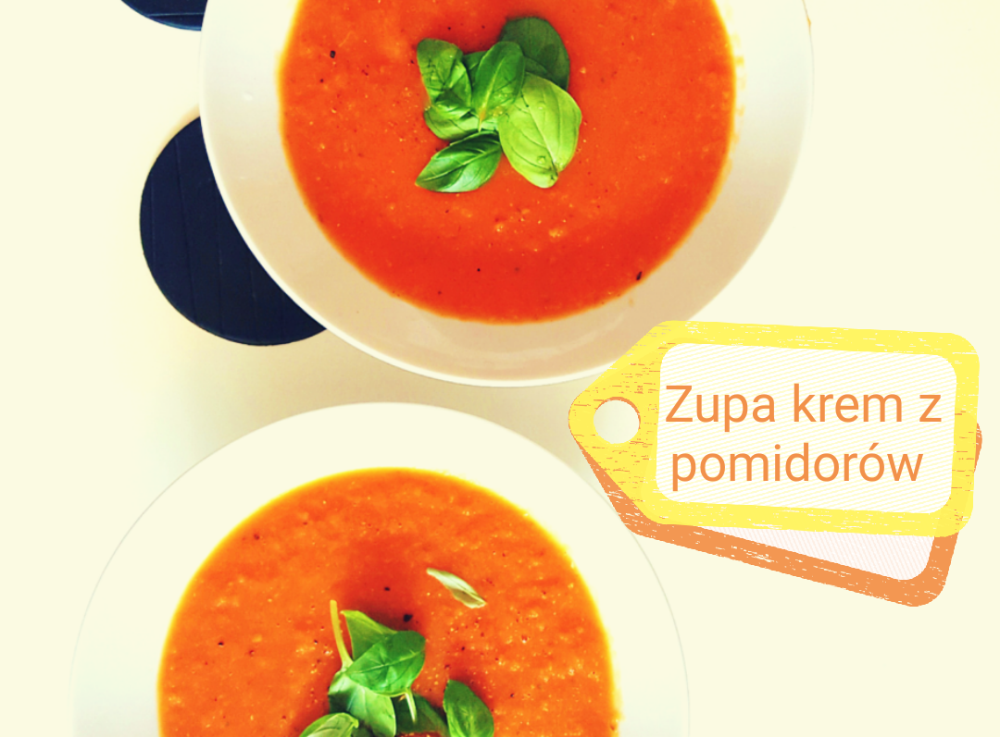
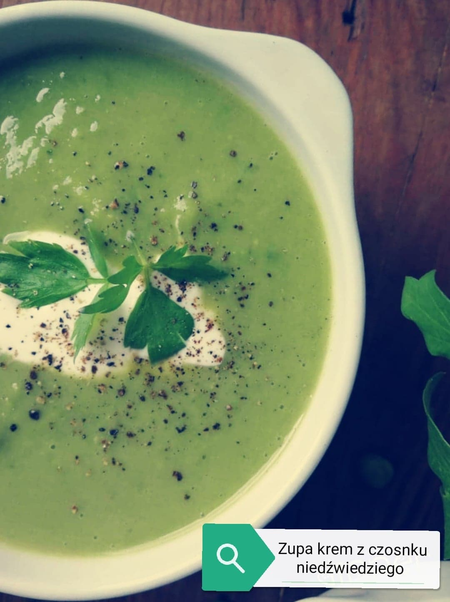
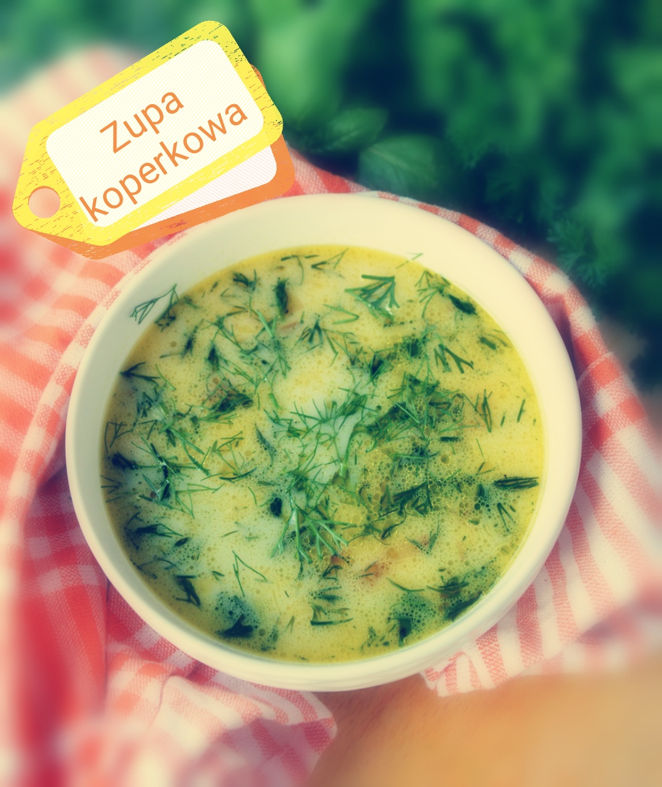

Zupa krem z pomidorów z lekką nutą śródziemnomorską
- porcje: 5
- czas przygotowania: 30min
- koszt: niski

- składniki:
- śmietana 18%,
- 20 g masła,
- 2 puszki pomidorów w kawałkach bez skórki,
- 2 szklanki bulionu,
- marchewka,
- pietruszka,
- ćwiartka selera,
- liść laurowy,
- ziele angielskie,
- bazylia,
- oregano,
- łyżeczka cukru,
- sól i pieprz.
- dodatki:
- grzanki
przygotowanie:
W garczku rozpuścić masło na średnim ogniu, dodać pomidory i
podsmażyć dwie minuty. Pomidory zalać bulionem, dodać obrane i
przekrojone na pół warzywa, oraz liść laurowy i ziele angielskie.
Przykryć pokrywką i dusić na małym ogniu przez 20 minut. Po tym
czasie dodać resztę przypraw i dusić jeszcze przez 5 minut na
większym ogniu. Następnie wyciągnąć liść laurowy i ziele
angielskie, a gorącą zupę zblędować na krem. Jeżeli krem jest zbyt
gęsty, należy dolać trochę wody. Zblędowany krem podawać z kleksem
śmietany, prażonym słonecznikiem lub grzankami.
Zupa krem z czosnku niedźwiedziego z lubczykiem
- porcje: 4
- czas przygotowania: 45 min
- koszt: niski

- składniki:
- śmietanka 30%
- 20 g masła,
- duża cebula,
- 2 szklanki bulionu,
- pietruszka,
- biała część pora,
- 2 ząbki czosnku,
- 150 g liści czosnku niedźwiedziego
- liść laurowy,
- ziele angielskie,
- sól i pieprz,
- lubczyk.
- dodatki:
- grzanki,
- prażony słonecznik.
przygotowanie:
W garczku rozpuścić masło na średnim ogniu, dodać pokrojoną cebulę
i posiekanego pora. Podsmażyć dwie minuty. Zalać bulionem, dodać
obrane i przekrojone na pół warzywa, oraz liść laurowy i ziele
angielskie. Przykryć pokrywką i dusić na małym ogniu przez 20
minut. Po tym czasie dodać resztę przypraw i dusić jeszcze przez 5
minut na większym ogniu. Następnie wyciągnąć liść laurowy i ziele
angielskie, a gorącą zupę zblędować na krem. Jeżeli krem jest zbyt
gęsty, należy dolać trochę wody. Zblędowany krem podawać z kleksem
śmietany, prażonym słonecznikiem lub grzankami.
Zupa koperkowa z lanymi kluskami
- porcje: 6
- czas przygotowania: 20 min
- koszt: niski

- składniki:
- 20 g masła,
- koperek świeży,
- szklanka bulionu,,
- marchewka,
- sól i pieprz,
- wegeta.,
- kluski:
- jajko,
- 2 łyżki śmietany 18%,
- 3 łyżki mąki pszennej.
przygotowanie:
W garczku rozpuścić masło na średnim ogniu. Marchewkę zetrzeć na
tarce o grubych oczkach i dodać do masła. zeszklić w garnku
później dodać pokrojony koperek i dusić przez chwilę. zalać
bulionem, dodać przyprawy i gotować przez 10 minut. Po tym czasie
dolać trochę wody i przygotować kluski. W kubku roztrzepać jajko z
mąką i śmietaną, dodać wegete i takie ciasto wlewać sukcesywnie do
gotującej się zupy. Gotować jeszcze 5 min i podawać.